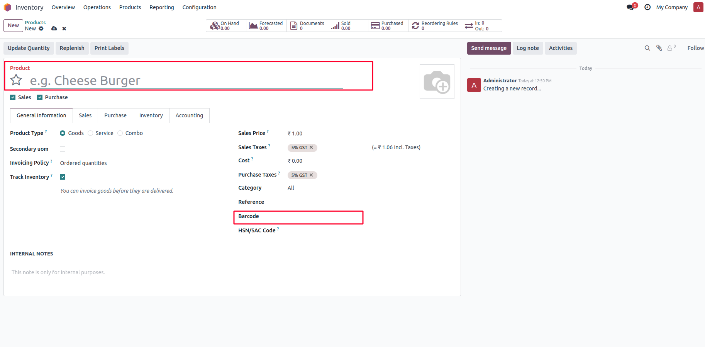
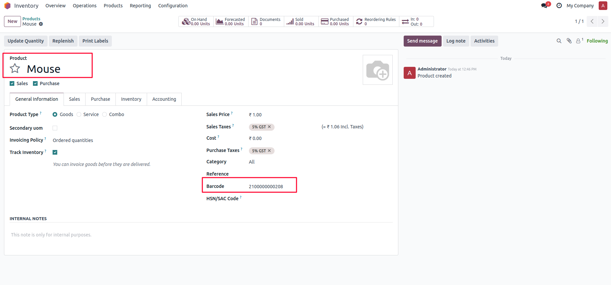

This module automatically generates a unique barcode each time a new product is created and saved in Odoo. It helps streamline inventory operations, ensures barcode uniqueness, and removes the need for manual entry.
When a new product is created and saved, the system automatically assigns a unique barcode.

The barcode is automatically stored in the product's barcode field.

After installing the module, simply create a new product in Odoo. When you save the record, a unique barcode will be automatically generated and assigned to the product's barcode field.
Apagen Solutions